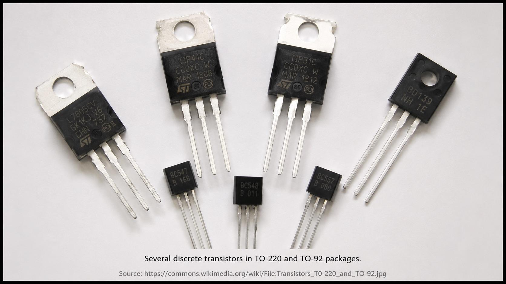

Chapter 07 · Semiconductors
Transistors
On 16 December 1947, John Bardeen and Walter Brattain got a sliver of germanium to do what the triode did with a glass tube, a hot filament, and a vacuum — amplify a signal — using nothing but solid semiconductor. William Shockley's improved bipolar junction design followed in 1948 and reached mass production in the early 1950s. It is, quite simply, the device the modern world runs on.
Three layers, one gate
A bipolar NPN transistor is a thin, lightly doped p-type base sandwiched between a heavily doped n-type emitter and an n-type collector. A small current into the base controls a much larger current flowing from collector to emitter.
| Mode | Junctions | Behavior |
|---|---|---|
| Cutoff | Both reverse-biased | Open switch — no current flows |
| Active | Base-emitter forward, base-collector reverse | Amplifier — IC = β × IB |
| Saturation | Both forward-biased | Closed switch — maximum current flows |

A real, in-focus photograph (not an illustration) of a handful of discrete transistors in common black plastic packages (e.g. TO-92, TO-220) with their three metal leads visible, on a plain background. Prefer a free-licensed photo from Wikimedia Commons; when dropped in, replace the "Source:" line below with the real Commons file page URL, in small font. Target size ~1280×720px, 16:9 landscape, subject centred with safe margins — letterboxed into a 16:9 box.
Generate or source this image, then drop the file here.
Worked example
β = 100, base current = 0.05 mA. Collector current = 100 × 0.05 = 5 mA.
Why this matters: Whether you want a switch (fully off or fully on) or an amplifier (a small, faithful multiple of a signal), it's the same three-layer device — only the operating point changes. That's the building block behind every logic gate, every audio amplifier, and the radio in the next chapter.